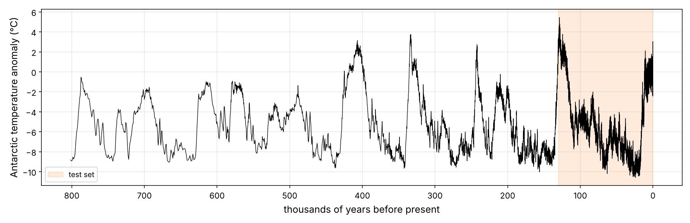
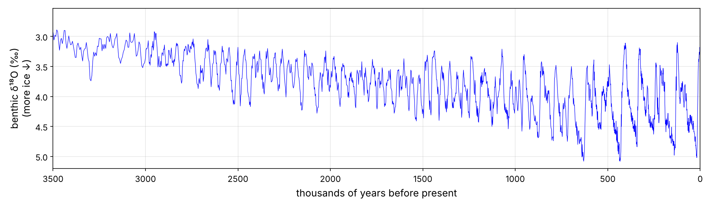
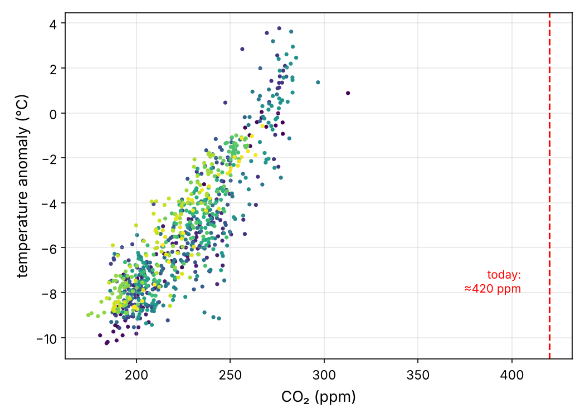
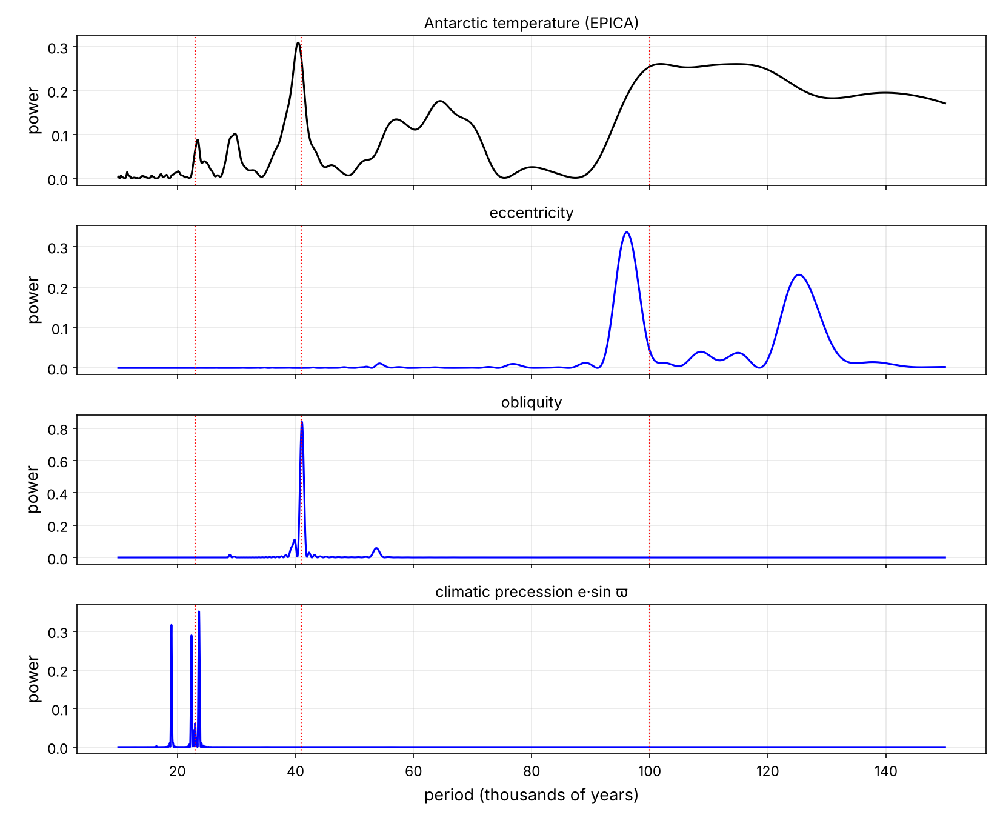
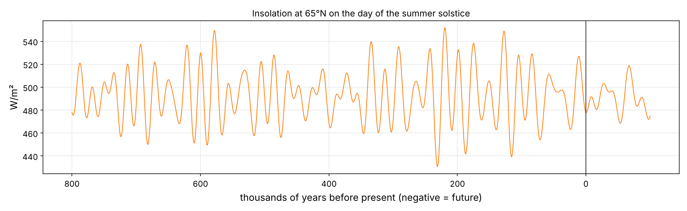
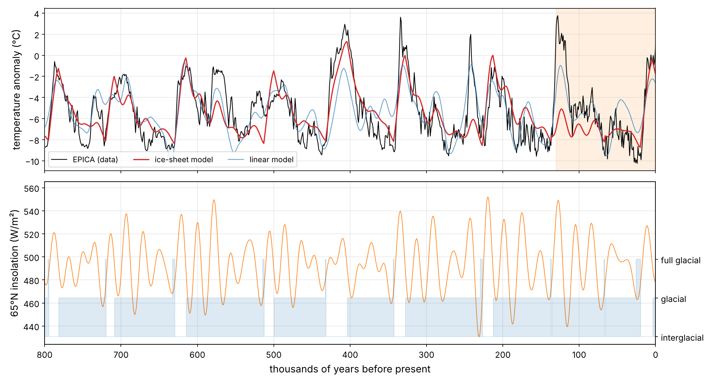
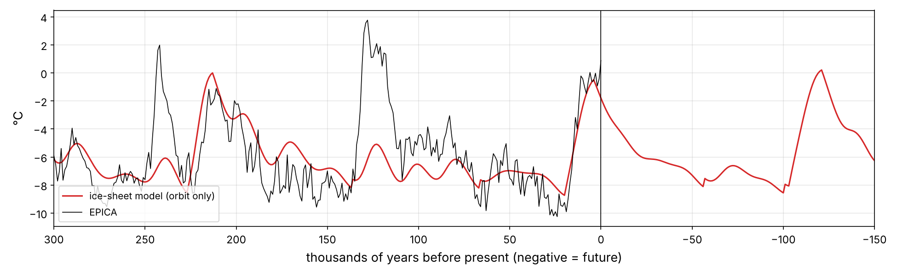
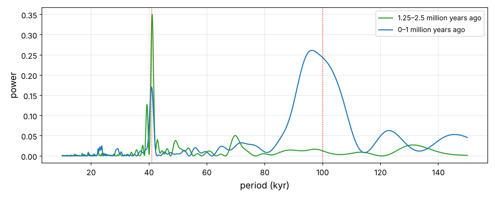

The Pacemaker of the Ice Ages
In this last chapter you will go through a sixth project end to end, pretending to be a recently hired data scientist at a paleoclimate lab. For the last million years, giant ice sheets have repeatedly spread over North America and Europe, then melted away. Each cycle took about 100,000 years. What drives them? In the 1920s, the Serbian engineer Milutin Milanković proposed an astronomical answer: slow, regular changes in the Earth's orbit change how much summer sunshine reaches the northern continents. Your job is to test that idea with real data, and to build a model that turns orbits into ice ages.1 The steps are the same as always:
- Look at the big picture.
- Get the data.
- Discover and visualize the data to gain insights.
- Prepare the data for Machine Learning algorithms.
- Select a model and train it.
- Fine-tune your model.
- Present your solution.
- Launch, monitor, and maintain your system.
This chapter is about time series. You will learn why random train/test splits are wrong for them, how to build lag features, and how to cross-validate with blocks of time. You will also see why a model that cannot be differentiated needs a randomized search. And you will meet two kinds of drift: the climate system changed its rules a million years ago, and today's atmosphere is outside anything in the training data.
Working with Real Data
| Dataset | Kind | Content |
|---|---|---|
| EPICA Dome C ice core: deuterium and temperature (Jouzel et al. 2007) | real measurements | 5,785 samples of Antarctic ice from 3.2 km of core, covering 800,000 years |
| Antarctic CO₂ composite (Bereiter et al. 2015) | real measurements | Air bubbles trapped in the ice: atmospheric CO₂ over 800,000 years |
| LR04 benthic δ¹⁸O stack (Lisiecki & Raymo 2005) | real measurements | 57 deep-sea sediment cores combined: global ice volume over 5.3 million years |
| La2004 orbital solution (Laskar et al. 2004) | astronomical model | The Earth's eccentricity, obliquity and perihelion every 1,000 years, from a numerical integration of the solar system |
The climate records are physical measurements made in laboratories on ice and mud, distributed by the NOAA World Data Service for Paleoclimatology. The orbital solution is to the Earth what NASA's ephemerides were to Uranus in Chapter 3: a model of gravity, integrated millions of years into the past and future.
The notebook ice_ages_project.ipynb runs in about a minute. All the data are cached in datasets/. The orbital solution is trimmed to ±6 million years.
Look at the Big Picture
Frame the Problem
The scientific objective is to test whether the orbit sets the timing of the ice ages, and to build a model that predicts climate from the orbit alone. The practical payoff: such a model can be run forward, because the orbit is known millions of years ahead. Framing: supervised regression on a time series, where inputs are the orbital state at (and before) each moment and the target is Antarctic temperature. We'll compare a generic statistical model with a physically motivated ice-sheet model whose hyperparameters are the climate system's thresholds and time constants.
Select a Performance Measure
We will use the RMSE in °C (Equation 1-2), and the correlation between predicted and observed temperature. Neither of them says whether a model gets the timing of events right, such as the abrupt ends of the ice ages. So we will also compare model and data in the frequency domain, and compare the dates of the ice-age terminations.
Check the Assumptions
- The chronology is right. Ice-core ages come from models of snow accumulation and ice flow, tied to independent markers. Their uncertainty is a few thousand years, more in the oldest part.
- Antarctica tracks global climate. It does, broadly, but it is one place. We'll cross-check with the global deep-sea record.
- The insolation feature captures the forcing. We pick 65°N and the summer solstice, following Milanković. That's a choice, and you could tune it.
- The rules don't change. We'll see that they did, a million years ago.
Get the Data
# Python ≥3.8 is required
import sys
assert sys.version_info >= (3, 8)
# Scikit-Learn ≥1.0 is required
import sklearn
assert sklearn.__version__ >= "1.0"
# Common imports
import os
import numpy as np
import pandas as pd
# To make this notebook's output stable across runs
np.random.seed(42)
# To plot pretty figures
import matplotlib as mpl
import matplotlib.pyplot as plt
mpl.rc('axes', labelsize=13)
mpl.rc('xtick', labelsize=11)
mpl.rc('ytick', labelsize=11)
# Where to save the figures
PROJECT_ROOT_DIR = "."
IMAGES_PATH = os.path.join(PROJECT_ROOT_DIR, "images")
os.makedirs(IMAGES_PATH, exist_ok=True)
def save_fig(fig_id, tight_layout=True, fig_extension="png", resolution=150):
path = os.path.join(IMAGES_PATH, fig_id + "." + fig_extension)
print("Saving figure", fig_id)
if tight_layout:
plt.tight_layout()
plt.savefig(path, format=fig_extension, dpi=resolution)
Download the Data
All four datasets are plain text files with descriptive headers. The orbital solution is huge (51 million years), so we keep only ±6 million years:
import urllib.request
DATA_PATH = os.path.join("datasets")
NOAA = "https://www.ncei.noaa.gov/pub/data/paleo/"
SOURCES = {
"epica_temperature.txt": NOAA + "icecore/antarctica/epica_domec/edc3deuttemp2007.txt",
"antarctic_co2_composite.txt": NOAA + "icecore/antarctica/antarctica2015co2composite.txt",
"lr04_benthic_stack.txt": NOAA + "contributions_by_author/lisiecki2005/lisiecki2005.txt",
"La2004_past.txt": "https://vo.imcce.fr/insola/earth/online/earth/La2004/INSOLN.LA2004.BTL.ASC",
"La2004_future.txt": "https://vo.imcce.fr/insola/earth/online/earth/La2004/INSOLP.LA2004.BTL.ASC",
}
def fetch_paleo_data(path=DATA_PATH):
os.makedirs(path, exist_ok=True)
for name, url in SOURCES.items():
target = os.path.join(path, name)
if os.path.exists(target):
continue
text = urllib.request.urlopen(url, timeout=300).read().decode("latin-1")
if name.startswith("La2004"): # keep -6 Myr .. +1 Myr (the files go to -51 Myr)
lines = [l for l in text.splitlines() if l.strip() and abs(float(l.split()[0])) <= 6000]
text = "\n".join(lines) + "\n"
with open(target, "w") as f:
f.write(text)
fetch_paleo_data()
sorted(os.listdir(DATA_PATH))
['La2004_future.txt', 'La2004_past.txt', 'antarctic_co2_composite.txt', 'epica_temperature.txt', 'lr04_benthic_stack.txt']
def load_epica(path=DATA_PATH):
df = pd.read_csv(os.path.join(path, "epica_temperature.txt"), sep=r"\s+", skiprows=91,
names=["bag", "depth_m", "age_yr", "deuterium", "temperature"], header=0)
df = df.dropna()
df = df[df["age_yr"] > 0]
return df.assign(age_kyr=df["age_yr"] / 1000)
def load_orbit(path=DATA_PATH):
"""La2004: time (kyr, negative = past), eccentricity, obliquity (rad),
longitude of perihelion from the moving equinox (rad)."""
frames = []
for name in ("La2004_past.txt", "La2004_future.txt"):
d = pd.read_csv(os.path.join(path, name), sep=r"\s+", header=None,
names=["t_kyr", "ecc", "obliquity", "varpi"], dtype=str)
frames.append(d.apply(lambda col: col.str.replace("D", "E").astype(float)))
orbit = pd.concat(frames).drop_duplicates("t_kyr").sort_values("t_kyr").reset_index(drop=True)
return orbit
def load_co2(path=DATA_PATH):
lines = open(os.path.join(path, "antarctic_co2_composite.txt"), encoding="latin-1").read().splitlines()
start = next(i for i, l in enumerate(lines) if l.startswith("age_gas_calBP"))
rows = [l.split() for l in lines[start + 1:] if len(l.split()) == 3]
co2 = pd.DataFrame(rows, columns=["age_yr", "co2_ppm", "co2_err"]).astype(float)
return co2.assign(age_kyr=co2["age_yr"] / 1000)
def load_lr04(path=DATA_PATH):
lines = open(os.path.join(path, "lr04_benthic_stack.txt"), encoding="latin-1").read().splitlines()
rows = []
for l in lines:
parts = l.split()
if len(parts) == 3:
try:
row = [float(p) for p in parts]
except ValueError:
continue
if rows and row[0] < rows[-1][0]: # the file holds other tables after the stack
break
rows.append(row)
return pd.DataFrame(rows, columns=["age_kyr", "d18O", "d18O_err"])
epica, orbit, co2, lr04 = load_epica(), load_orbit(), load_co2(), load_lr04()
epica.head()
| bag | depth_m | age_yr | deuterium | temperature | age_kyr | |
|---|---|---|---|---|---|---|
| 12 | 13 | 6.60 | 38.37379 | -390.9 | 0.88 | 0.038374 |
| 13 | 14 | 7.15 | 46.81203 | -385.1 | 1.84 | 0.046812 |
| 14 | 15 | 7.70 | 55.05624 | -377.8 | 3.04 | 0.055056 |
| 15 | 16 | 8.25 | 64.41511 | -394.1 | 0.35 | 0.064415 |
| 16 | 17 | 8.80 | 73.15077 | -398.7 | -0.42 | 0.073151 |
Take a Quick Look at the Data Structure
epica.info()
<class 'pandas.DataFrame'> Index: 5785 entries, 12 to 5799 Data columns (total 6 columns): # Column Non-Null Count Dtype --- ------ -------------- ----- 0 bag 5785 non-null int64 1 depth_m 5785 non-null float64 2 age_yr 5785 non-null float64 3 deuterium 5785 non-null float64 4 temperature 5785 non-null float64 5 age_kyr 5785 non-null float64 dtypes: float64(5), int64(1) memory usage: 316.4 KB
epica[["age_kyr", "deuterium", "temperature"]].describe().round(2)
| age_kyr | deuterium | temperature | |
|---|---|---|---|
| count | 5785.00 | 5785.0 | 5785.00 |
| mean | 190.51 | -417.8 | -4.58 |
| std | 192.55 | 18.0 | 3.45 |
| min | 0.04 | -449.5 | -10.58 |
| 25% | 46.79 | -432.5 | -7.45 |
| 50% | 122.11 | -421.3 | -5.20 |
| 75% | 273.34 | -403.3 | -1.82 |
| max | 801.66 | -361.2 | 5.46 |
The temperature is an anomaly, relative to the average of the last thousand years. It ranges from −10.6 °C (deepest glacial) to +5.5 °C (the warmest interglacials were warmer than today). Now the orbit around the present. La2004 stores the obliquity and the perihelion in radians, and negative times are the past:
orbit[(orbit["t_kyr"] >= -2) & (orbit["t_kyr"] <= 2)]
| t_kyr | ecc | obliquity | varpi | |
|---|---|---|---|---|
| 5998 | -2.0 | 0.017497 | 0.413555 | 1.200024 |
| 5999 | -1.0 | 0.017161 | 0.411353 | 1.497928 |
| 6000 | 0.0 | 0.016702 | 0.409093 | 1.796257 |
| 6001 | 1.0 | 0.016275 | 0.406834 | 2.098561 |
| 6002 | 2.0 | 0.015850 | 0.404631 | 2.397657 |
Today \(e = 0.0167\) and \(\varepsilon = 0.4091\) rad = 23.44°. Now, an important property of the ice core:
spacing = np.diff(epica["age_kyr"].values)
print(f"median spacing: {np.median(spacing[epica['age_kyr'].values[1:] < 10]) * 1000:.0f} years "
f"(last 10 kyr) vs {np.median(spacing[epica['age_kyr'].values[1:] > 700]) * 1000:.0f} years (> 700 kyr)")
median spacing: 19 years (last 10 kyr) vs 621 years (> 700 kyr)
The sampling is extremely uneven. The top of the core has one sample every 19 years, and the bottom one every 600 years, because deep ice is squeezed thinner. If we fitted the raw samples, the last 10,000 years would weigh 30 times more than the oldest ones. So we resample to one value every 1,000 years.
Create a Test Set
For time series, a random split is wrong. Neighboring years are almost identical, so a random test set would test interpolation, not prediction. The honest test is to hold out a contiguous block of time, here the last glacial cycle (0–130,000 years ago), and train on the 670,000 years before it:
# Uneven sampling -> one value per 1,000 years (interpolation), so that every epoch
# weighs the same in the error
ages = np.arange(0, 800) # kyr before present
temp = np.interp(ages, epica["age_kyr"], epica["temperature"])
climate = pd.DataFrame({"age_kyr": ages, "temperature": temp})
# Time-series split: the most recent glacial cycle is the test set (the "future")
TEST_AGE = 130
train_set = climate[climate["age_kyr"] >= TEST_AGE].copy()
test_set = climate[climate["age_kyr"] < TEST_AGE].copy()
len(train_set), len(test_set)
(670, 130)
Discover and Visualize the Data to Gain Insights
800,000 Years of Climate
fig, ax = plt.subplots(figsize=(13, 4.2))
ax.plot(epica["age_kyr"], epica["temperature"], "k-", lw=0.7)
ax.axvspan(0, TEST_AGE, color="tab:orange", alpha=0.15, label="test set")
ax.invert_xaxis(); ax.set_xlabel("thousands of years before present")
ax.set_ylabel("Antarctic temperature anomaly (°C)"); ax.grid(alpha=0.3); ax.legend(loc="lower left")
save_fig("epica_temperature_plot")
plt.show()

The famous sawtooth: slow, bumpy coolings over about 80,000 years, then sudden warmings, the terminations, in less than 10,000 years. Warm interglacials like today's are short spikes. Note also that the cycles before about 430,000 years ago had milder interglacials. Now the deep-sea record, which goes much further back (Figure 6-2):
fig, ax = plt.subplots(figsize=(13, 3.8))
ax.plot(lr04["age_kyr"], lr04["d18O"], "b-", lw=0.6)
ax.invert_xaxis(); ax.invert_yaxis()
ax.set_xlabel("thousands of years before present"); ax.set_ylabel("benthic δ¹⁸O (‰)\n(more ice ↓)")
ax.set_xlim(3500, 0); ax.grid(alpha=0.3)
save_fig("lr04_plot")
plt.show()

A striking change: before about a million years ago, the ice came and went in small, regular cycles. After it, the cycles became larger and slower. Keep this in mind for the "monitoring" section.
Looking for Correlations
co2_on_grid = np.interp(climate["age_kyr"], co2["age_kyr"], co2["co2_ppm"])
climate["co2_ppm"] = co2_on_grid
climate[["temperature", "co2_ppm"]].corr().round(3)
| temperature | co2_ppm | |
|---|---|---|
| temperature | 1.000 | 0.886 |
| co2_ppm | 0.886 | 1.000 |
fig, ax = plt.subplots(figsize=(7, 5))
ax.scatter(climate["co2_ppm"], climate["temperature"], s=6, c=climate["age_kyr"], cmap="viridis")
ax.axvline(420, color="r", ls="--"); ax.text(405, -8, "today:\n≈420 ppm", color="r", ha="right")
ax.set_xlabel("CO₂ (ppm)"); ax.set_ylabel("temperature anomaly (°C)"); ax.grid(alpha=0.3)
save_fig("co2_temperature_plot")
plt.show()

A correlation of 0.89 between temperature and CO₂. This is not a proof that CO₂ drives the ice ages: in these cycles CO₂ is mostly a feedback that responds to and amplifies the orbital push. It is a strong hint of how sensitive the climate is to CO₂. Look also at where today's atmosphere sits: far to the right of every point in 800,000 years.
Looking for Periodicities
If the orbit paces the climate, the climate should contain the orbit's periods. The data are unevenly sampled, so we use the Lomb–Scargle periodogram again (Chapter 1):
from scipy.signal import lombscargle, find_peaks
def periodogram(age, value, periods):
return lombscargle(age, value - value.mean(), 2 * np.pi / periods, normalize=True)
periods = np.linspace(10, 150, 4000)
power = periodogram(epica["age_kyr"].values, epica["temperature"].values, periods)
peaks, _ = find_peaks(power, height=0.02, distance=60)
top = peaks[np.argsort(power[peaks])[::-1][:6]]
pd.DataFrame({"period_kyr": periods[top].round(1), "power": power[top].round(3)})
| period_kyr | power | |
|---|---|---|
| 0 | 40.5 | 0.309 |
| 1 | 101.8 | 0.261 |
| 2 | 114.6 | 0.261 |
| 3 | 139.9 | 0.195 |
| 4 | 64.5 | 0.176 |
| 5 | 57.1 | 0.135 |
past = orbit[(orbit["t_kyr"] <= 0) & (orbit["t_kyr"] >= -2000)]
orbit_power = {
"eccentricity": periodogram(-past["t_kyr"].values, past["ecc"].values, periods),
"obliquity": periodogram(-past["t_kyr"].values, past["obliquity"].values, periods),
"climatic precession e·sin ϖ": periodogram(-past["t_kyr"].values,
(past["ecc"] * np.sin(past["varpi"])).values, periods),
}
fig, axes = plt.subplots(4, 1, figsize=(11, 9), sharex=True)
axes[0].plot(periods, power, "k-"); axes[0].set_ylabel("power"); axes[0].set_title("Antarctic temperature (EPICA)")
for ax, (name, pw) in zip(axes[1:], orbit_power.items()):
ax.plot(periods, pw, "b-"); ax.set_ylabel("power"); ax.set_title(name)
for ax in axes:
for p in (23, 41, 100):
ax.axvline(p, color="r", ls=":", lw=1)
ax.grid(alpha=0.3)
axes[-1].set_xlabel("period (thousands of years)")
save_fig("periodograms_plot")
plt.show()

The climate record has strong power at 41,000 years, exactly the obliquity period, and at about 100,000 years, matching the eccentricity. A smaller peak near 23,000 years matches precession. This is the result of the landmark 1976 paper by Hays, Imbrie and Shackleton, "Variations in the Earth's Orbit: Pacemaker of the Ice Ages", reproduced here in a few lines.2
But there is a puzzle. Eccentricity changes the total yearly sunshine by only about 0.1%, which is far too little to cause the biggest climate cycle directly. This is the famous 100,000-year problem, and we'll come back to it.
Prepare the Data for Machine Learning Algorithms
Feature Engineering: Sunshine from Orbits
The orbital elements are not the right features: what matters physically is sunshine. The daily-mean insolation at latitude \(\phi\), on the day when the Sun is at longitude \(\lambda\) along its yearly path, follows from geometry:
\(S_0 = 1361\) W/m² is the solar constant, \(\delta\) the Sun's declination (Chapter 1's Equation 1-1 again), \(h_0\) the hour angle of sunset, and \(\varpi_\odot\) the Sun's longitude of perihelion as seen from the Earth (La2004's \(\varpi\) + 180°). The first factor is the distance effect from eccentricity and precession. The second is the day-length and Sun-height effect from obliquity.
S0 = 1361.0 # W/m², total solar irradiance
def daily_insolation(ecc, obliquity, varpi, latitude_deg=65.0, solar_longitude_deg=90.0):
"""Daily-mean top-of-atmosphere insolation (W/m²) at a latitude, on the day when the Sun
is at a given longitude (90° = northern summer solstice). varpi as in La2004 (heliocentric)."""
phi, lam = np.radians(latitude_deg), np.radians(solar_longitude_deg)
delta = np.arcsin(np.sin(obliquity) * np.sin(lam)) # solar declination
h0 = np.arccos(np.clip(-np.tan(phi) * np.tan(delta), -1, 1)) # sunset hour angle
distance_factor = (1 + ecc * np.cos(lam - varpi - np.pi)) / (1 - ecc ** 2) # (a/r)
return S0 / np.pi * distance_factor ** 2 * (h0 * np.sin(phi) * np.sin(delta) +
np.cos(phi) * np.cos(delta) * np.sin(h0))
orbit["insolation_65N"] = daily_insolation(orbit["ecc"], orbit["obliquity"], orbit["varpi"])
now = orbit.loc[orbit["t_kyr"] == 0, "insolation_65N"].iloc[0]
last_myr = orbit[(orbit["t_kyr"] <= 0) & (orbit["t_kyr"] >= -1000)]["insolation_65N"]
print(f"65°N summer insolation today: {now:.1f} W/m² (range over 1 Myr: {last_myr.min():.0f}–{last_myr.max():.0f})")
65°N summer insolation today: 477.9 W/m² (range over 1 Myr: 431–559)
fig, ax = plt.subplots(figsize=(13, 4))
w = (orbit["t_kyr"] >= -800) & (orbit["t_kyr"] <= 100)
ax.plot(-orbit.loc[w, "t_kyr"], orbit.loc[w, "insolation_65N"], "tab:orange", lw=1)
ax.invert_xaxis(); ax.axvline(0, color="k", lw=0.8)
ax.set_xlabel("thousands of years before present (negative = future)"); ax.set_ylabel("W/m²")
ax.set_title("Insolation at 65°N on the day of the summer solstice"); ax.grid(alpha=0.3)
save_fig("insolation_plot")
plt.show()

Summer sunshine at 65°N swings by about 25% (430–560 W/m²), mostly with the 23,000-year precession rhythm. Its amplitude is modulated by eccentricity. Today we are near a minimum of eccentricity, so the coming swings are unusually weak.
Lag Features
Ice sheets take thousands of years to respond, so climate depends on past forcing, not only on today's. The standard time-series trick is lag features: the values of the inputs some time before. Our transformer takes an age and returns the insolation, eccentricity, obliquity and climatic precession at that time and 5, 10 and 20 thousand years earlier:
from sklearn.base import BaseEstimator, TransformerMixin
class OrbitalFeatures(BaseEstimator, TransformerMixin):
"""age (kyr) -> orbital features at that time and at earlier times (lag features)."""
def __init__(self, lags=(0, 5, 10, 20), latitude=65.0):
self.lags = lags
self.latitude = latitude
def fit(self, X, y=None):
return self
def __sklearn_is_fitted__(self):
return True
def transform(self, X):
age = np.asarray(X, dtype=float).ravel()
t = orbit["t_kyr"].values
ins = daily_insolation(orbit["ecc"], orbit["obliquity"], orbit["varpi"], self.latitude).values
cols = []
for lag in self.lags:
ta = -(age + lag)
e, eps, vp = (np.interp(ta, t, orbit[c].values) for c in ("ecc", "obliquity", "varpi_unwrapped"))
cols += [np.interp(ta, t, ins), e, eps, e * np.sin(vp), e * np.cos(vp)]
return np.column_stack(cols)
orbit["varpi_unwrapped"] = np.unwrap(orbit["varpi"].values)
OrbitalFeatures().fit_transform(train_set[["age_kyr"]])[:2].round(4)
array([[ 5.386247e+02, 3.940000e-02, 4.235000e-01, -2.820000e-02,
-2.760000e-02, 4.862400e+02, 3.660000e-02, 4.198000e-01,
1.920000e-02, -3.110000e-02, 4.627319e+02, 3.340000e-02,
4.079000e-01, 3.170000e-02, 1.050000e-02, 5.049179e+02,
2.840000e-02, 3.917000e-01, -2.790000e-02, 5.300000e-03],
[ 5.296083e+02, 3.890000e-02, 4.237000e-01, -1.950000e-02,
-3.370000e-02, 4.774026e+02, 3.580000e-02, 4.179000e-01,
2.630000e-02, -2.440000e-02, 4.644205e+02, 3.270000e-02,
4.051000e-01, 2.730000e-02, 1.810000e-02, 5.055683e+02,
2.820000e-02, 3.922000e-01, -2.810000e-02, -1.900000e-03]])
Select and Train a Model
A Linear Model
from sklearn.pipeline import make_pipeline
from sklearn.preprocessing import StandardScaler
from sklearn.linear_model import Ridge
from sklearn.metrics import mean_squared_error
X_train, y_train = train_set[["age_kyr"]], train_set["temperature"].values
lin_model = make_pipeline(OrbitalFeatures(), StandardScaler(), Ridge(alpha=1.0))
lin_model.fit(X_train, y_train)
pred = lin_model.predict(X_train)
print(f"linear model, training RMSE = {np.sqrt(mean_squared_error(y_train, pred)):.2f} °C, "
f"correlation = {np.corrcoef(pred, y_train)[0, 1]:.2f}")
linear model, training RMSE = 1.85 °C, correlation = 0.75
Cross-Validation for Time Series
Ordinary K-fold cross-validation would again leak information between neighboring years. Instead we cut the training period into five contiguous blocks of about 134,000 years (roughly one glacial cycle each), and use them as groups in GroupKFold:
from sklearn.model_selection import GroupKFold, cross_val_score
blocks = ((train_set["age_kyr"].values - TEST_AGE) // 134).astype(int) # 5 blocks of ~134 kyr
blocked_cv = GroupKFold(n_splits=len(np.unique(blocks)))
def rmse_scores(model):
return -cross_val_score(model, X_train, y_train, groups=blocks, cv=blocked_cv,
scoring="neg_root_mean_squared_error")
def display_scores(name, s):
print(f"{name:28s} RMSE per block: {np.round(s, 2)} mean {s.mean():.2f} °C")
display_scores("linear (orbit + lags)", rmse_scores(lin_model))
linear (orbit + lags) RMSE per block: [1.53 1.92 2.76 2.31 1.87] mean 2.08 °C
How about a more flexible model, with lags every 5,000 years up to 100,000 years?
from sklearn.ensemble import HistGradientBoostingRegressor
gbm = make_pipeline(OrbitalFeatures(lags=tuple(range(0, 101, 5))),
HistGradientBoostingRegressor(max_iter=300, random_state=42))
display_scores("gradient boosting (21 lags)", rmse_scores(gbm))
gbm.fit(X_train, y_train)
print(f"gradient boosting training RMSE = {np.sqrt(mean_squared_error(y_train, gbm.predict(X_train))):.2f} °C")
gradient boosting (21 lags) RMSE per block: [2.22 1.62 2.73 2.84 3.17] mean 2.51 °C gradient boosting training RMSE = 0.06 °C
A training RMSE of 0.06 °C and a cross-validated RMSE of 2.5 °C: gradient boosting memorized the training period, and generalizes worse than the linear model. With only about 670 strongly correlated data points, a flexible model has almost nothing to learn from. How does the linear model do in the frequency domain?
lin_full = lin_model.predict(climate[["age_kyr"]])
p_lin = periodogram(climate["age_kyr"].values, lin_full, periods)
p_obs = periodogram(climate["age_kyr"].values, climate["temperature"].values, periods)
band = lambda p, lo, hi: p[(periods > lo) & (periods < hi)].max()
pd.DataFrame({"data": [band(p_obs, 19, 25), band(p_obs, 38, 44), band(p_obs, 80, 130)],
"linear model": [band(p_lin, 19, 25), band(p_lin, 38, 44), band(p_lin, 80, 130)]},
index=["~23 kyr", "~41 kyr", "~100 kyr"]).round(3)
| data | linear model | |
|---|---|---|
| ~23 kyr | 0.035 | 0.036 |
| ~41 kyr | 0.186 | 0.386 |
| ~100 kyr | 0.304 | 0.288 |
The linear model gets the 100,000-year power because eccentricity is one of its inputs. But it has twice too much 41,000-year power, and its response is smooth and symmetric: it cannot produce the sawtooth with its sudden terminations.
An Ice-Sheet Model
Here's a physical idea. Ice sheets have memory and thresholds. They grow slowly when summers are cool, become unstable once they are very large, and then collapse quickly when the next strong summer comes. Didier Paillard (1998) captured this with three discrete climate states and a single ice-volume variable:
\(f(t)\) is the normalized 65°N insolation, slightly truncated, because ice responds less to very low insolation than to high. In the interglacial state (i), the ice relaxes toward zero. In the glacial states (g, G), it relaxes toward full size. The state switches when the insolation crosses a threshold, or when the ice sheet becomes large enough to be unstable. The temperature is then a linear function of ice volume. The fitted parameters are only that line's intercept and slope. The eight thresholds and time constants are hyperparameters:
from sklearn.base import RegressorMixin
class IceSheetModel(BaseEstimator, RegressorMixin):
"""Paillard (1998)-style three-state ice-sheet model, driven by 65°N summer insolation.
States: 0 = interglacial (i), 1 = mild glacial (g), 2 = full glacial (G).
i -> g when the forcing drops below i0
g -> G when the ice volume exceeds v_max
G -> i when the forcing rises above i1 (a 'termination')
dv/dt = (v_ref - v) / tau_state - f / tau_f, v_ref = 0, 1, 1
Temperature = a + b * v (a, b learned by linear regression)."""
def __init__(self, i0=-0.75, i1=0.0, v_max=1.0, tau_i=10.0, tau_g=50.0, tau_G=50.0,
tau_f=25.0, truncation=1.0, start_kyr=1000):
self.i0, self.i1, self.v_max = i0, i1, v_max
self.tau_i, self.tau_g, self.tau_G, self.tau_f = tau_i, tau_g, tau_G, tau_f
self.truncation, self.start_kyr = truncation, start_kyr
def simulate(self, until_kyr=0):
sel = (orbit["t_kyr"] >= -self.start_kyr) & (orbit["t_kyr"] <= until_kyr)
t = orbit.loc[sel, "t_kyr"].values
ins = orbit.loc[sel, "insolation_65N"].values
ref = orbit.loc[(orbit["t_kyr"] >= -self.start_kyr) & (orbit["t_kyr"] <= 0), "insolation_65N"]
x = (ins - ref.mean()) / ref.std()
a = self.truncation
f = 0.5 * (x + np.sqrt(4 * a * a + x * x)) - a # weak response to low insolation
v, state = 0.0, 0
V, S = np.empty(len(t)), np.empty(len(t), dtype=int)
v_ref, tau = (0.0, 1.0, 1.0), (self.tau_i, self.tau_g, self.tau_G)
for k in range(len(t)):
if state == 0 and f[k] < self.i0:
state = 1
elif state == 1 and v > self.v_max:
state = 2
elif state == 2 and f[k] > self.i1:
state = 0
v += (v_ref[state] - v) / tau[state] - f[k] / self.tau_f # dt = 1 kyr
V[k], S[k] = v, state
return t, V, S
def ice_volume(self, age_kyr):
t, V, S = self.simulate()
return np.interp(-np.asarray(age_kyr, float).ravel(), t, V)
def fit(self, X, y):
v = self.ice_volume(X)
A = np.c_[np.ones_like(v), v]
(self.a_, self.b_), *_ = np.linalg.lstsq(A, y, rcond=None)
return self
def predict(self, X):
return self.a_ + self.b_ * self.ice_volume(X)
ice_model = IceSheetModel().fit(X_train, y_train) # Paillard's 1998 published values
display_scores("ice-sheet model (1998 values)", rmse_scores(IceSheetModel()))
ice-sheet model (1998 values) RMSE per block: [2.13 2.1 3.35 2.53 2.69] mean 2.56 °C
With Paillard's original 1998 values, the cross-validated RMSE (2.56 °C) is no better than the linear model's. But those values were tuned by hand on older data. Let's tune them properly.
Fine-Tune Your Model
Randomized Search
This model is not differentiable. A tiny change of a threshold can switch a state and change the whole future, so gradient-based fitting like least_squares() doesn't work. Randomized search is ideal: each candidate costs one fast simulation, and 1,500 random combinations explore eight dimensions far better than a grid could:
from sklearn.model_selection import RandomizedSearchCV
from scipy.stats import uniform
param_distribs = {"i0": uniform(-1.5, 2.0), "i1": uniform(-0.5, 2.0), "v_max": uniform(0.5, 1.5),
"tau_i": uniform(3, 27), "tau_g": uniform(10, 90), "tau_G": uniform(5, 75),
"tau_f": uniform(5, 55), "truncation": uniform(0.2, 2.8)}
rnd_search = RandomizedSearchCV(IceSheetModel(), param_distribs, n_iter=1500, cv=blocked_cv,
scoring="neg_root_mean_squared_error", random_state=42, n_jobs=-1)
rnd_search.fit(X_train, y_train, groups=blocks)
print(f"best cross-validated RMSE: {-rnd_search.best_score_:.2f} °C")
pd.Series(rnd_search.best_params_).round(3)
best cross-validated RMSE: 1.83 °C i0 -0.104 i1 -0.336 tau_G 36.370 tau_f 35.762 tau_g 26.867 tau_i 15.102 truncation 1.883 v_max 0.991 dtype: float64
The cross-validated RMSE drops to 1.83 °C, now better than the linear model. The best parameters are physically sensible: time constants of 15 to 36 thousand years, and a deglaciation threshold just below average insolation.
Analyze the Best Models
final_model = rnd_search.best_estimator_
for name, model in [("linear", lin_model), ("gradient boosting", gbm), ("ice-sheet model", final_model)]:
model.fit(X_train, y_train)
p = model.predict(X_train)
print(f"{name:18s} training RMSE {np.sqrt(mean_squared_error(y_train, p)):.2f} °C, "
f"correlation {np.corrcoef(p, y_train)[0, 1]:.2f}")
linear training RMSE 1.85 °C, correlation 0.75 gradient boosting training RMSE 0.06 °C, correlation 1.00 ice-sheet model training RMSE 1.83 °C, correlation 0.76
fig, axes = plt.subplots(2, 1, figsize=(13, 7), sharex=True)
full_ages = climate[["age_kyr"]]
axes[0].plot(climate["age_kyr"], climate["temperature"], "k-", lw=1, label="EPICA (data)")
axes[0].plot(climate["age_kyr"], final_model.predict(full_ages), "tab:red", lw=1.5, label="ice-sheet model")
axes[0].plot(climate["age_kyr"], lin_model.predict(full_ages), "tab:blue", lw=1, alpha=0.7, label="linear model")
axes[0].axvspan(0, TEST_AGE, color="tab:orange", alpha=0.12)
axes[0].set_ylabel("temperature anomaly (°C)"); axes[0].legend(loc="lower left", ncol=3); axes[0].grid(alpha=0.3)
t_sim, V, S = final_model.simulate()
axes[1].plot(-t_sim, orbit.set_index("t_kyr").loc[t_sim, "insolation_65N"].values, "tab:orange", lw=0.8)
ax2 = axes[1].twinx()
ax2.fill_between(-t_sim, 0, S, step="mid", color="tab:blue", alpha=0.15)
ax2.set_yticks([0, 1, 2], ["interglacial", "glacial", "full glacial"]); ax2.set_ylim(-0.2, 4)
axes[1].set_ylabel("65°N insolation (W/m²)")
axes[1].set_xlim(800, 0); axes[1].set_xlabel("thousands of years before present"); axes[1].grid(alpha=0.3)
save_fig("model_fit_plot")
plt.show()

The ice-sheet model reproduces the sawtooth: long glacial descents, then sudden terminations. When do its terminations happen, compared with the data?
# When does the model end an ice age? (G -> i transitions) vs. the data (fast warmings)
model_terms = -t_sim[1:][(S[:-1] == 2) & (S[1:] == 0)]
model_terms = np.sort(model_terms[model_terms <= 800])
smooth = pd.Series(climate["temperature"].values).rolling(5, center=True).mean().values
warming = smooth[:-8] - smooth[8:] # warming over the following 8 kyr
cand, _ = find_peaks(np.nan_to_num(warming), height=4, distance=50)
data_terms = np.sort(climate["age_kyr"].values[cand] + 4)
pairs = []
for d in data_terms:
m = model_terms[np.argmin(np.abs(model_terms - d))]
pairs.append({"data (kyr ago)": d, "nearest model termination": m, "difference (kyr)": m - d})
print("model terminations:", model_terms.astype(int))
pd.DataFrame(pairs)
model terminations: [ 19 66 136 226 342 431 512 629 719 794]
| data (kyr ago) | nearest model termination | difference (kyr) | |
|---|---|---|---|
| 0 | 15 | 19.0 | 4.0 |
| 1 | 133 | 136.0 | 3.0 |
| 2 | 247 | 226.0 | -21.0 |
| 3 | 338 | 342.0 | 4.0 |
| 4 | 429 | 431.0 | 2.0 |
| 5 | 627 | 629.0 | 2.0 |
| 6 | 739 | 719.0 | -20.0 |
| 7 | 792 | 794.0 | 2.0 |
Every termination detected in the data has a model termination within 2 to 21 thousand years. Most are within 4,000 years, close to the dating uncertainty of the ice core. The model knows nothing but the orbit and eight numbers. The 100,000-year problem has a natural answer here. Each glacial cycle ends at the first strong summer that comes after the ice sheet has grown large enough to be unstable. Large ice sheets take about 80,000–100,000 years to build, so terminations skip most of the 23,000-year insolation peaks and land, on average, every 100,000 years. The model also has two extra terminations (66,000 and 512,000 years ago) that don't appear in the data. At 66,000 years ago, a strong summer came after a fairly large ice build-up, and the real climate only warmed partially.
Evaluate on the Test Set
X_test, y_test = test_set[["age_kyr"]], test_set["temperature"].values
for name, model in [("linear", lin_model), ("gradient boosting", gbm), ("ice-sheet model", final_model)]:
p = model.predict(X_test)
print(f"{name:18s} test RMSE {np.sqrt(mean_squared_error(y_test, p)):.2f} °C, "
f"correlation {np.corrcoef(p, y_test)[0, 1]:.2f}")
linear test RMSE 2.14 °C, correlation 0.81 gradient boosting test RMSE 2.21 °C, correlation 0.77 ice-sheet model test RMSE 2.84 °C, correlation 0.69
An honest result. On the last glacial cycle, the linear model has the best RMSE, and the ice-sheet model is penalized for its false termination 66,000 years ago. That error spans 50,000 years of the test period. Neither model is perfect, and the right choice depends on the question. If you want the smallest average error, the linear model wins on this test. If you want to know when ice ages end, the ice-sheet model is the only one that can tell you. Let's also compare the spectra:
p_model = periodogram(climate["age_kyr"].values, final_model.predict(full_ages), periods)
pd.DataFrame({"data": [band(p_obs, 19, 25), band(p_obs, 38, 44), band(p_obs, 80, 130)],
"linear model": [band(p_lin, 19, 25), band(p_lin, 38, 44), band(p_lin, 80, 130)],
"ice-sheet model": [band(p_model, 19, 25), band(p_model, 38, 44), band(p_model, 80, 130)]},
index=["~23 kyr", "~41 kyr", "~100 kyr"]).round(3)
| data | linear model | ice-sheet model | |
|---|---|---|---|
| ~23 kyr | 0.035 | 0.036 | 0.057 |
| ~41 kyr | 0.186 | 0.386 | 0.127 |
| ~100 kyr | 0.304 | 0.288 | 0.328 |
The ice-sheet model gets the balance closest to the data: most power at 100,000 years and less at 41,000 years. The linear model overstates obliquity by a factor of two.
Present Your Solution
What you can report:
- The climate of the last 800,000 years contains the orbital periods (41,000, about 100,000 and 23,000 years). The orbit is the pacemaker of the ice ages.
- Summer insolation at 65°N, computed from the orbit, is the right feature. A simple non-linear ice-sheet model driven by it reproduces the timing of all the major terminations, and explains why the cycles last about 100,000 years.
- Generic flexible models overfit badly. With strongly autocorrelated data and a few hundred points, physics-informed structure beats capacity.
- CO₂ moves almost in lockstep with temperature, as an amplifying feedback.
Launch, Monitor, and Maintain
The orbit is known for millions of years ahead, so let's "launch" the model into the future (Figure 6-7):
t_f, V_f, S_f = final_model.simulate(until_kyr=150)
fut = t_f > 0
future_temp = final_model.a_ + final_model.b_ * V_f
fig, ax = plt.subplots(figsize=(13, 4))
ax.plot(-t_f, future_temp, "tab:red", label="ice-sheet model (orbit only)")
ax.plot(climate["age_kyr"], climate["temperature"], "k-", lw=0.8, label="EPICA")
ax.axvline(0, color="k", lw=0.8); ax.set_xlim(300, -150)
ax.set_xlabel("thousands of years before present (negative = future)"); ax.set_ylabel("°C")
ax.grid(alpha=0.3); ax.legend(loc="lower left")
save_fig("forecast_plot")
plt.show()
print("model state today:", ["interglacial", "glacial", "full glacial"][S_f[t_f == 0][0]])
next_full = t_f[fut][S_f[fut] == 2]
print(f"next full-glacial state in the orbit-only model: {next_full[0]:.0f} kyr from now" if len(next_full) else "no full glacial in the next 150 kyr")
Saving figure forecast_plot model state today: glacial next full-glacial state in the orbit-only model: 56 kyr from now

Driven by the orbit alone, the model says we have already entered a mild glacial state, and that the next full ice age comes in about 56,000 years. Eccentricity is currently near a minimum, so the coming summers have weak swings and no strong "melt" pulse. Research models with physics of ice and carbon reach similar conclusions: the present interglacial was close to a glacial inception before the industrial era, and the low eccentricity favors an unusually long interglacial.3 But should we trust this forecast? Two monitoring checks say: not as it is.
Concept drift. Was the climate always in the "100,000-year world"? Let's look at the deep-sea record before and after one million years ago:
# Concept drift: is the 100-kyr world the only one? Periodogram of LR04 in two windows
windows = {"1.25–2.5 million years ago": (1250, 2500), "0–1 million years ago": (0, 1000)}
fig, ax = plt.subplots(figsize=(10, 4))
for (label, (lo, hi)), color in zip(windows.items(), ["tab:green", "tab:blue"]):
w = lr04[(lr04["age_kyr"] >= lo) & (lr04["age_kyr"] <= hi)]
pw = periodogram(w["age_kyr"].values, w["d18O"].values, periods)
ax.plot(periods, pw, color=color, label=label)
print(f"{label}: strongest period {periods[np.argmax(pw)]:.0f} kyr")
for p in (41, 100):
ax.axvline(p, color="r", ls=":", lw=1)
ax.set_xlabel("period (kyr)"); ax.set_ylabel("power"); ax.legend(); ax.grid(alpha=0.3)
save_fig("mid_pleistocene_transition_plot")
plt.show()
1.25–2.5 million years ago: strongest period 41 kyr 0–1 million years ago: strongest period 96 kyr Saving figure mid_pleistocene_transition_plot

Before about a million years ago, the ice ages followed the 41,000-year obliquity rhythm. After it, the 100,000-year cycles took over. The orbit didn't change: the climate system did. This is the Mid-Pleistocene Transition, and its cause is still debated, perhaps slowly declining CO₂ or the erosion of soft sediments under the ice sheets. A model trained on one regime fails in the other. That's concept drift on a geological scale.
Data drift. And then there is the input our model doesn't even have:
pre_industrial = co2[(co2["age_kyr"] >= 2) & (co2["age_kyr"] <= 800)]
print(f"CO2 in the training period: {pre_industrial['co2_ppm'].min():.0f}–"
f"{pre_industrial['co2_ppm'].max():.0f} ppm; today: ≈420 ppm")
CO2 in the training period: 174–299 ppm; today: ≈420 ppm
Every one of our 670 training points had CO₂ between about 170 and 300 ppm. Today's 420 ppm is far outside the training distribution, and rising. No model trained on the past 800,000 years can be trusted to extrapolate there. Physical models that include CO₂ find that today's levels postpone the next glaciation by tens of thousands of years or more. When production inputs leave the training distribution, the right response is not to trust the model less a little. It is to stop and build a model that contains the new physics.
Try It Out!
The animation runs on the chapter's equations and fitted model. Tab 1 shows the Earth's orbit, with its eccentricity, tilt and precession taken from La2004 for any moment you pick, and the resulting sunshine at 65°N through the year. Tab 2 is a time machine from 800,000 years ago to 100,000 years in the future: the forcing, the ice-sheet model's state and ice volume, a growing and shrinking northern ice cap, and the real Antarctic temperature. Full screen: animations/ice_ages_animation.html.
Exercises
- Tune the forcing itself: make the latitude (55–75°N) and the day of the year (the solar longitude in
daily_insolation()) hyperparameters of the search. Does "65°N summer" win? Try caloric summer insolation or integrated summer energy instead. - Fit the ice-sheet model to the LR04 ice-volume record instead of Antarctic temperature. Do the terminations line up better?
- Add CO₂ as an input to the linear model. How much does the RMSE improve? Why is this "cheating" for forecasting, but useful for understanding?
- Train the ice-sheet model on 1.5–2.5 million years ago (LR04) and run it on the last million years. Quantify the concept drift.
- Use
TimeSeriesSplit(training always before validation) instead of blockedGroupKFold. Which is more appropriate here, and why? - Replace the three-state model with a small recurrent neural network (an LSTM) trained on insolation. With 670 points, what happens?
1 M. Milanković, Kanon der Erdbestrahlung und seine Anwendung auf das Eiszeitenproblem (1941). The idea goes back to James Croll in the 1860s.
2 J. D. Hays, J. Imbrie and N. J. Shackleton, "Variations in the Earth's Orbit: Pacemaker of the Ice Ages", Science 194, 1121 (1976).
3 A. Berger and M.-F. Loutre, "An Exceptionally Long Interglacial Ahead?", Science 297, 1287 (2002). A. Ganopolski, R. Winkelmann and H. J. Schellnhuber, "Critical insolation–CO₂ relation for diagnosing past and future glacial inception", Nature 529, 200 (2016).
Data credits. EPICA Dome C: J. Jouzel et al. (2007), Science 317, 793. CO₂ composite: B. Bereiter et al. (2015), GRL 42, 542. LR04: L. Lisiecki and M. Raymo (2005), Paleoceanography 20, PA1003. All via the NOAA World Data Service for Paleoclimatology. Orbital solution: J. Laskar et al. (2004), A&A 428, 261, via IMCCE. Ice-sheet model after D. Paillard (1998), Nature 391, 378.